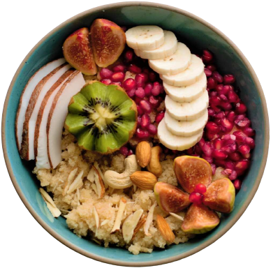

Diplômée de la prestigieuse école de cuisine "Master En Chef" à Nébula Alpha 33 en 2004, Mike Strutter, Wakandais d’origine est partie se former une dizaine d’années auprès de grands Chefs étoilés partout dans l'univers. Il a eu le plaisir de travailler dans des maisons d’exception ou cuisine rime avec haute voltige et découverte galactiques.
Son apprentissage lui a permis de lui ouvrir les portes de la haute gastronomie très rapidement avec des stages en maison étoilées de renom dans des univers encore inexplorés tel que Kandor et Alpha du centaure.
Son retour dans notre galaxy et surtout dans notre système solaire avec un vrai coup de cœur pour ce loft au bord de l’eau donnant sur l’écluse du canal saint martin.
Services
Nous vous proposons

Petit Déjeuner
Des céréales avec du lait ou bien des tartines pain-beurre-confiture, le tout accompagné d’un verre .
Déjeuner
Des céréales avec du lait ou bien des tartines pain-beurre-confiture, le tout accompagné d’un verre de jus d’orange.
Diner
Des céréales avec du lait ou bien des tartines pain-beurre-confiture, le tout .